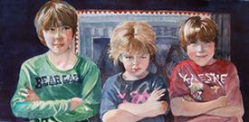

Rita Salazar Dickerson


Since I was a little girl, I knew I would be an artist. Being the middle of seven children, I was encouraged by my artistic parents (my father, a painter, and my mother, a culinary artist) to be myself and pursue my dreams. As a result, I never had any fears or doubts when it came to exploring new avenues in art. Each experience (whether it was being the in-house artist of a large financial institution, doing freelance work for a variety of companies, or painting fine art landscapes, still life and portraits) contributed in a valuable way to the artist that I am today. Though most of my time is now spent on commissioned portraits and landscapes in oil, I still have occasional opportunities to work in other mediums such as acrylics, pen and ink, pencil and charcoal.
June Heimsoth

June Heimsoth is a native of Colorado Springs. A country girl who grew up on horses. June loves to paint critters and portraits. She has a small gallery east of downtown, where she paints and displays her paintings. Most of her paintings are done with only the primary colors and white. June teaches oil and acrylic painting for all levels. www.bijouartgallery.com 719-227-0098
Reveille Kennedy
Reveille grew up in Pueblo, Colorado and built, glued, mixed and painted with old enamels on the wood leftover from her father’s carpenter shop. Reveille’s Mother wrote poetry and songs. There was no lack of imagination in this family! Reveille was intrigued by the flamboyant colors in bugs and flowers, and the running together of the paints. She ruined many un-cleaned brushes. Reveille hung by her knees from the tallest trees and yodled. Reveille was in the first class to graduate from South High School in 1960 and attended two years at Pueblo Jr. College. She has taken many workshops and classes around the world. Her paintings hang in England, Scotland, Japan and around the US. Reveille is currently teaching out of her house/studio and at Sangre de Cristo Arts Center. She is the past President of Pike’s Peak Watercolor Society, and currently President of Arati Gallery in Old Colorado City.
I am a people watcher and light gatherer, scanning body attitude, expression, the drape of clothing, hair in sunlight and skin. I imagine people in settings of my own creation. I feel that their strength, dignity, weakness or sorrow is evident in my work such as the limp limb of relaxation or the limber body pressed to the dancers side. A baby unsteadily toddling, play and repose are part of my unique, colorful approach to painting. In nature does it matter if the leaves on trees are falling up or down? I am intrigued with clouds forming into a floating spaceship. I try to imitate the colors I see in iridescent birds wings and the sun glinting off of them as they are in motion. What is new to painting? It is that indescribable individual scrawl, stroke, line or choice of color. It is the puzzling mix of learned and experimented. Great artists become, and become until their hair falls out and their jaws droop. It is meditation, intuition, inspiration, poetry and mystery. For me, painting and creating is the most intriguing career anyone could have.
Andy Borden


I started painting as a hobby after retiring (at an early age) from a career in research management. While living in Savannah, Georgia, I attended various art workshops and classes and became active in a large art association that sponsored shows, lectures, etc. I also studied many books on oil painting methods and techniques. My wife and I moved to Colorado in the summer of 2007, where I continued my art education mainly through classes and workshops offered by the Cottonwood Artists School. I also collected and studied many more books on oil painting methods. I primarily paint western landscapes, but occasionally paint flowers and architectural features like windows. My studio is at my home in the Flying Horse Community in the northern part of Colorado Springs. My home phone is 719-302-6152 and my email address is andyborden@gmail.com.
Kathy Ford

My love of art began in high school when I started taking private lessons in oil painting. Since then I have been drawn to the mysterious watery depth and endless possibilities of watercolor. I get my inspiration primarily from nature, but find most any subject an interesting painting experience! Recently I have studied watercolor painting with local artists Tom Owens, Lorraine Watry, and Martha Kisling. Special thanks to Dale St. Bistro for displaying my art!